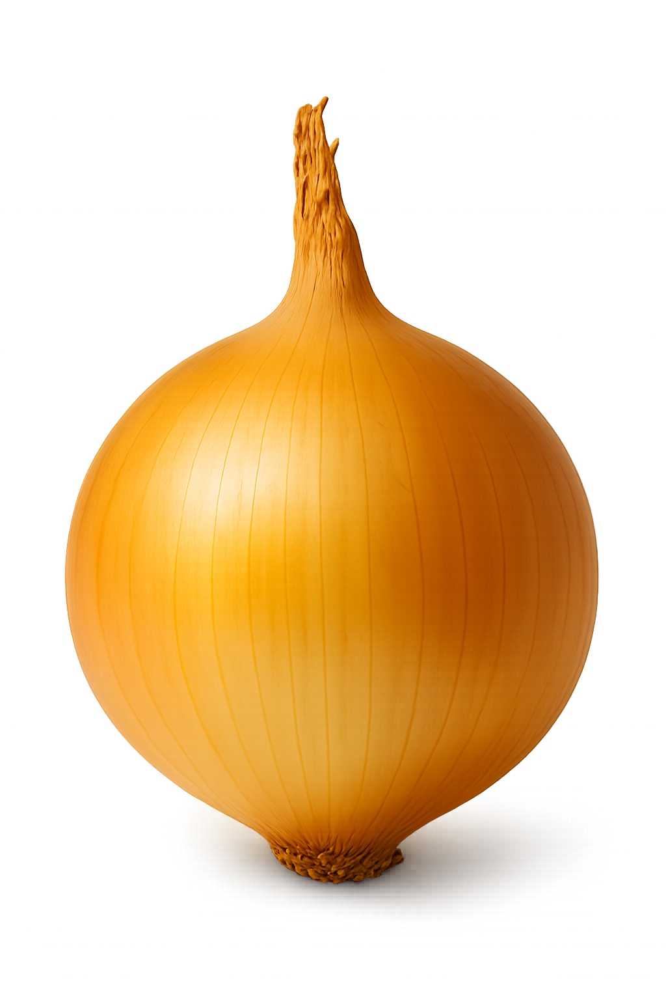
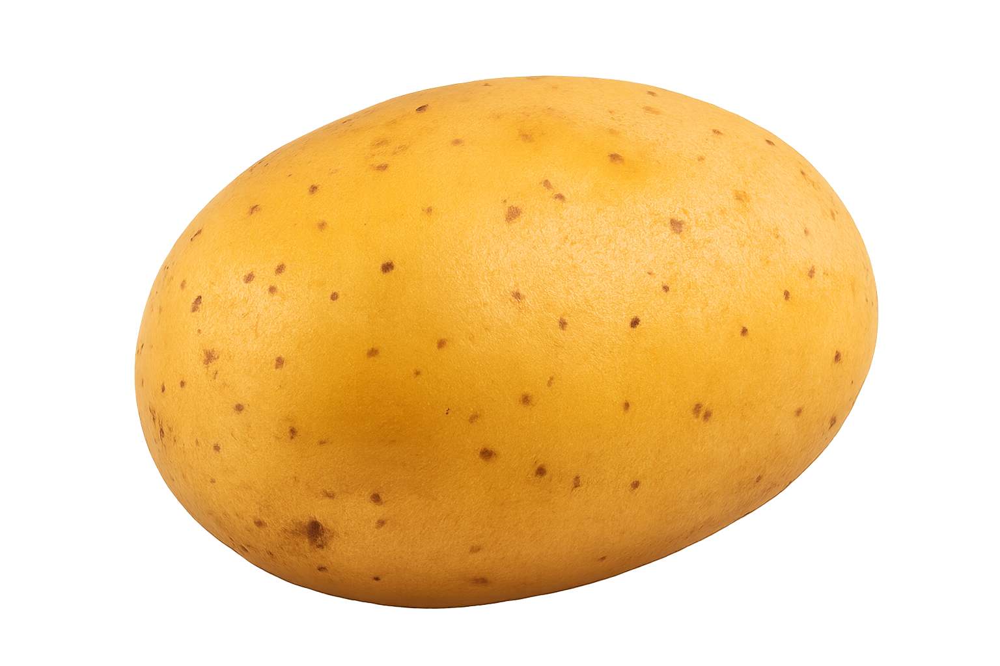
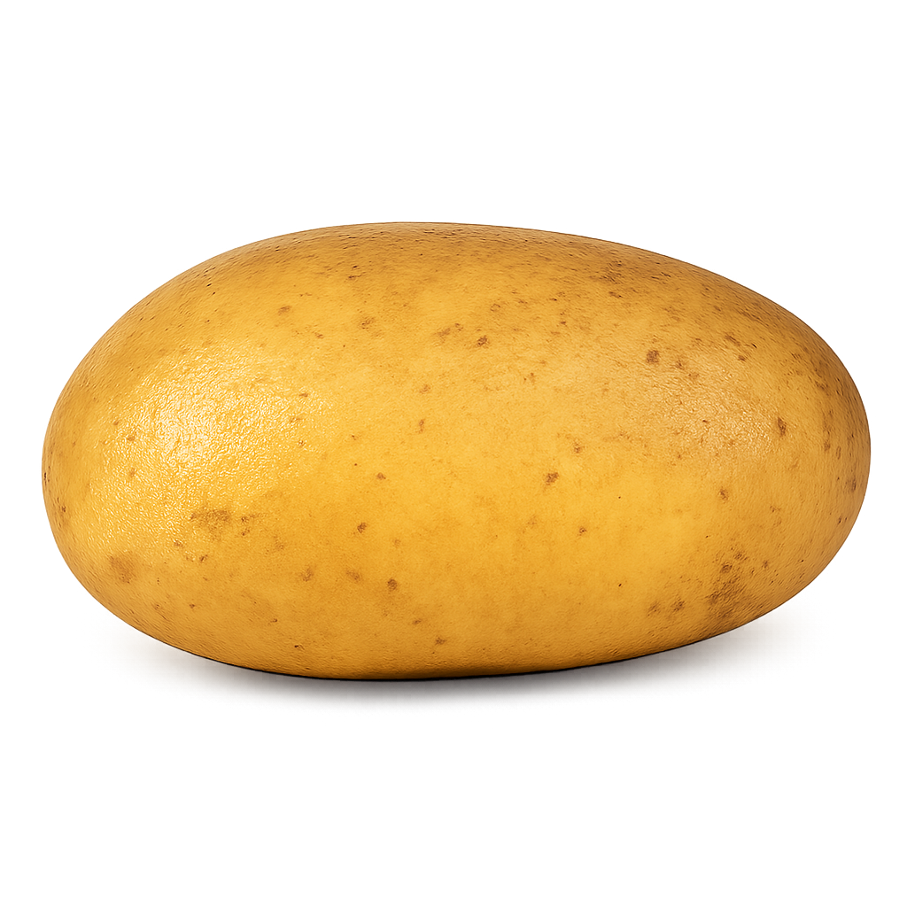

Vegetables
Our vegetables are hand-selected from Egypt’s finest farms, ensuring freshness, quality, and consistency from harvest to shipment.
Disclaimer: Product images are for illustrative purposes only and may not represent the exact appearance or quality of purchased goods.
Onion
Egyptian onions are renowned for their distinctive taste, uniform shape, and vibrant color—qualities that set them apart in global markets and make them a preferred choice for export.
Giza Red Onion
Giza Red onions are a premium Egyptian variety, distinguished by their uniform spherical shape, vibrant color, and rich flavor—backed by superior phytochemical properties that make them highly valued in both culinary and export markets.
Giza 20 Onion
Giza 20 is a widely cultivated Egyptian onion variety, known for its strong pungency, high yield, and adaptability—making it a reliable choice for both local markets and large-scale export.
Garlic
We export premium-grade Egyptian garlic, carefully selected and processed to meet international standards for quality, size, and shelf life.
Egyptian Garlic
Egyptian garlic is known for its large, well-formed cloves and intense aroma—making it a powerful and sought-after ingredient in international kitchens and food industries.
Potatoes
Egyptian potatoes are valued for their firm texture, consistent size, and long shelf life—making them an ideal choice for export and a staple in international food markets.
Spunta
Spunta potatoes, one of Egypt’s leading export varieties, are known for their elongated shape, smooth yellow skin, and high productivity—perfect for both fresh consumption and industrial use.
Burren
Burren potatoes are prized for their round to oval shape, smooth skin, and excellent cooking qualities—making them a versatile variety favored in both domestic and international markets.
Caruso
Commonly referred to as 'Cruze' by Egyptian farmers, Caruso potatoes are a high-yielding German variety known for their uniform oval shape, smooth skin, and excellent storage qualities—making them a strong performer in both local and export markets.
Disclaimer: Product images are for illustrative purposes only and may not represent the exact appearance or quality of purchased goods.